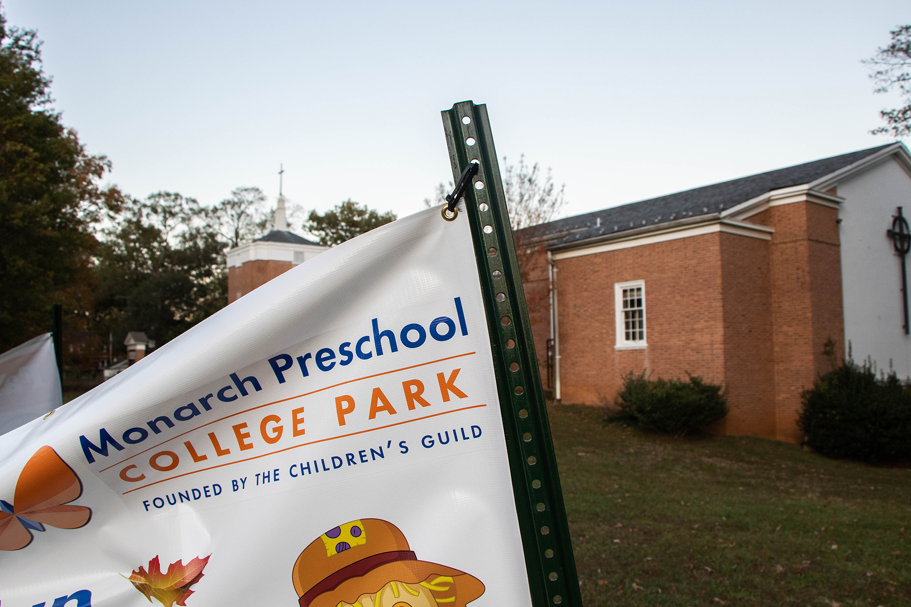
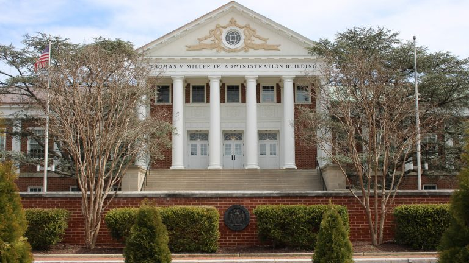
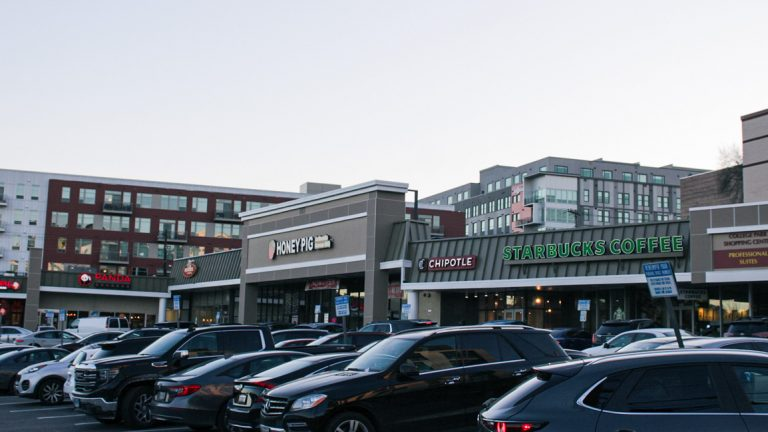
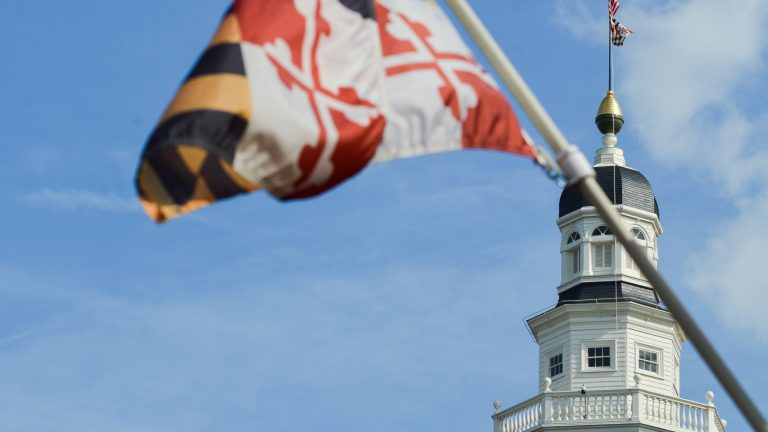
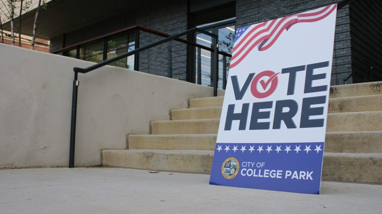
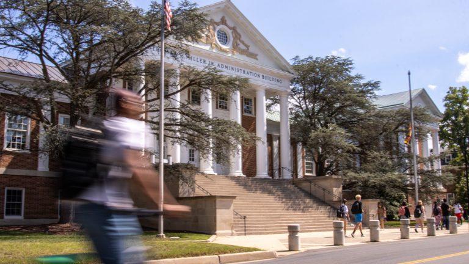
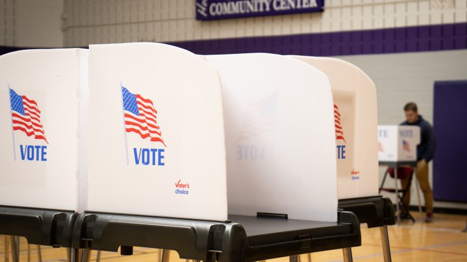

Articles
Li Chun Café celebrates grand opening in College Park
College Park community members celebrated the grand opening of Chinese restaurant Li Chun Café on Saturday.
Link College Park City Council approves $50,000 grant to build preschool playground
The College Park City Council approved a $50,000 grant Tuesday to help Monarch Preschool build a new playground.
Link University Senate discusses belonging survey, new biostatistics graduate degree programs
The University Senate discussed the results of the University of Maryland’s Belonging and Community Survey and established a new doctoral and master of science biostatistics degree during its meeting Wednesday.
LinkUniversity Senate discusses new administrative program set to launch in November
The University Senate received updates during its meeting Thursday on the Elevate Program, which intends to modernize the University of Maryland’s administration system.
LinkAngela Alsobrooks, Larry Hogan discuss higher education during Maryland US Senate race
Prince George’s County Executive Angela Alsobrooks (D-Md.) and former Gov. Larry Hogan (R-Md.) look to strengthen their higher education platforms as November’s election for Maryland’s vacant U.S. Senate seat approaches.
LinkUMD community members brace for impacts of Trump orders on LGBTQ+ community
U.S. President Donald Trump’s multiple executive orders targeting the LGBTQ+ community have created uncertainty for college students across the nation, including at the University of Maryland.
Link Compass Coffee, Honey Pig Korean BBQ among College Park’s new restaurants in 2025
College Park welcomed new restaurants to its business scene in 2025, with several more scheduled to open in the coming months.
Link Maryland voters codify reproductive rights in state constitution
Marylanders voted to enshrine reproductive rights in the state’s constitution on Tuesday.
Link UMD initiative encourages students to become poll workers in upcoming election
dAn initiative, organized by TerpsVote and Power the Polls at the University of Maryland, is encouraging students to become poll workers for the upcoming presidential election on Nov. 5.
Link5 Tips From a Girl Who Just Started Long Distance
In the beginning of August my boyfriend left for college at Virginia Tech. A few weeks later I moved to the University of Maryland. With a five hour drive and 225 miles between us our relationship is now officially long distance.
LinkPlant-based cookie shop MidnighTreats brings a sweet new option to College Park
Plant-based cookie shop MidnighTreats opened a new College Park location on Feb. 8, according to the store’s owner Jordan Rutland.
Link
University Senate delays decision on supporting graduate students’ right to unionize
The University Senate did not make a decision on a resolution in support of collective bargaining rights for graduate student workers during its meeting on Wednesday.
Link A look at how UMD manages its endowment
The University of Maryland SGA on Wednesday is expected to discuss a resolution calling on the University System of Maryland Foundation and the University of Maryland College Park Foundation to divest from certain security, defense and military companies.
Link Here’s how UMD students can vote in the 2024 elections
Maryland voters will head to the polls in less than two months for the Nov. 5 general election headlined by key races at the state and national levels.
Link